Hola, mi linda novia.
Hoy cumplimos nuestro primer mes oficial. Aunque este día nos toca pasarlo a distancia porque sigues de viaje, quiero que sepas que no hay un solo momento del día en el que no te extrañe, y ya estoy contando las horas para poder verte mañana en cuanto regreses.
Ha sido un mes increíble. Me encanta darme cuenta de que, incluso cuando los planes cambian o los días se complican, tu compañía siempre logra apaciguar cualquier angustia y hace que todo valga la pena. Cada ida al cine, cada plática, cada risa y cada momento que compartimos me confirman lo mucho que me gusta estar contigo.
Gracias por ser como eres. Valoro muchísimo lo comprensiva que eres, por escucharme cuando me equivoco y por hacer equipo conmigo.
Hice este pequeño rincón para guardar nuestros recuerdos y que nunca olvidemos cómo empezó nuestra historia. Te quiero muchísimo, Alincita.
El detrás de cámaras. Grabé cómo hice posible ese día desde cero. Fue un mes completo de emociones y atrasos pero cada esfuerzo y cada línea de código valió la pena para llegar hasta aquí.
El contador llegó a cero, las coordenadas revelaron la sorpresa en la terraza y finalmente te pedí que fueras mi novia. El inicio oficial de nuestra bonita historia de amor.
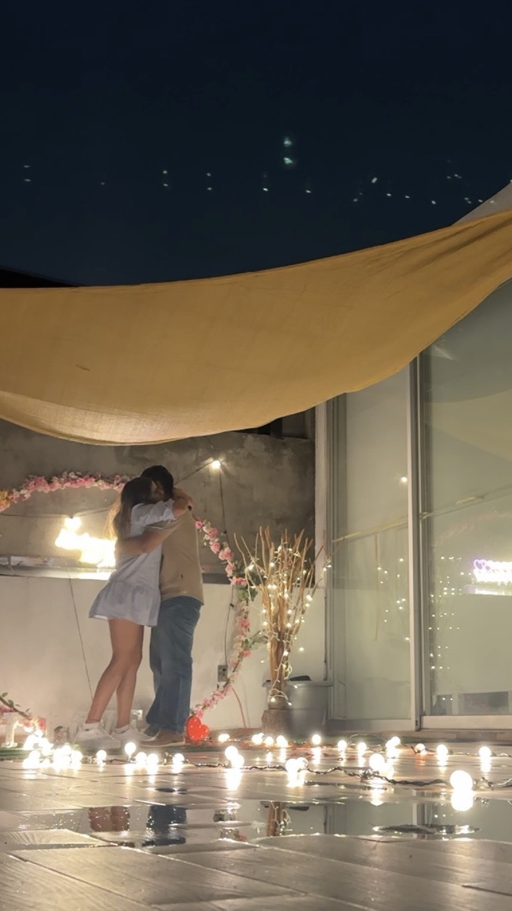
Fuimos a Parque Aztlán. Fue muy divertido subirnos a la rueda de la fortuna y pasar un momento tan agradable junto a tu mamá, tu hermana y Mia.
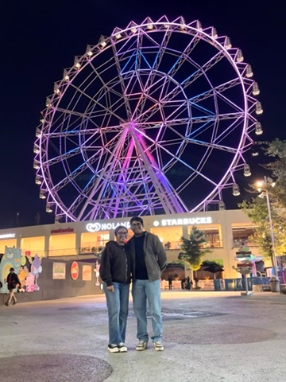
Ese día me iba a regresar a Puebla, pero la caja de velocidades falló. Estaba muy angustiado, pero gracias a tu compañía lograste apaciguar ese complicado momento.
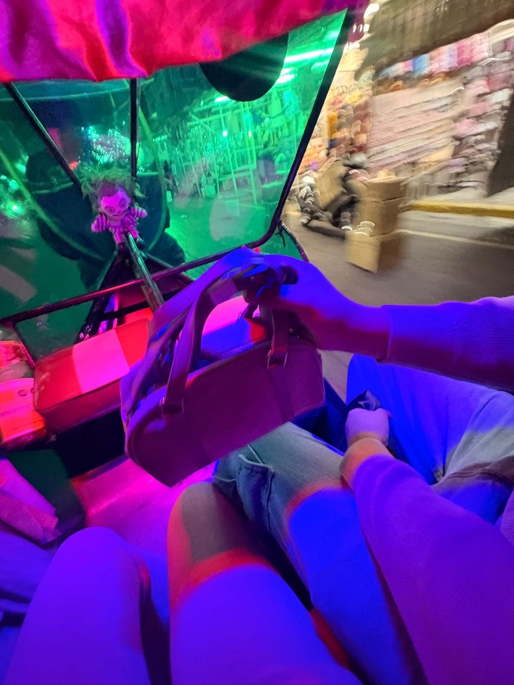
Encontramos mecánico gracias a tu familia. Mientras reparaban el carro, pasé el día con tus papás ayudando en lo que pude en sus negocios. En la tarde, fuimos al cine oficialmente como novios :)
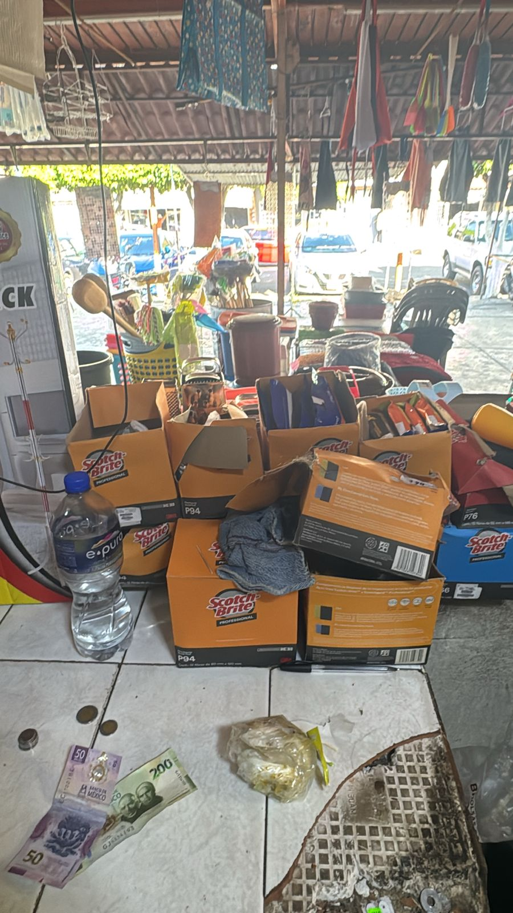
Me entregaron el carro. Pasé por ti al trabajo, escuchamos música y la pasamos increíble como siempre. Fuimos al cine de nuevo con tu mamá y tu hermano antes de regresar a Puebla. No hubo día que no dejara pensara en ti.
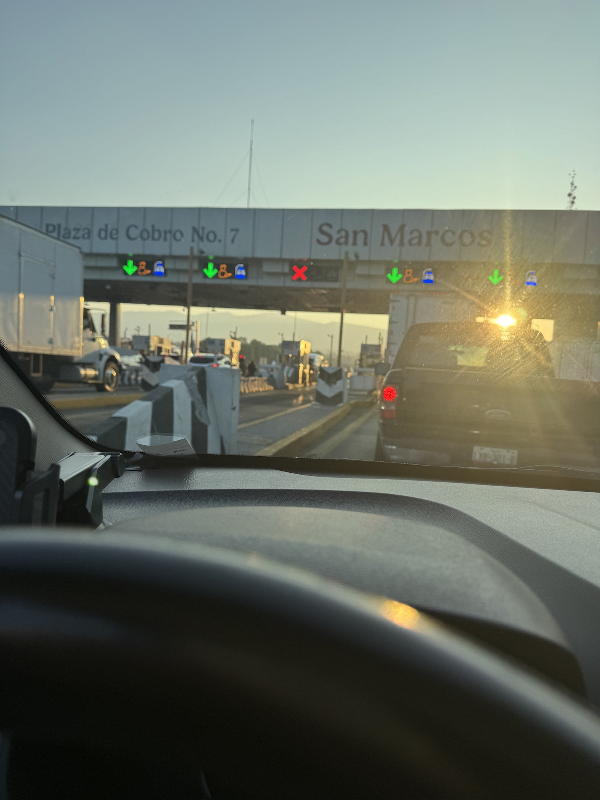
Después de muchos días, por fin pude ver a mi linda novia. Fui por ti al trabajo, dejamos mi lap, fuimos por un cafe y por fin pudimos comer los ricos tacos Tony y aunque tuvimos un pequeño accidente con el carro (jajaja), fue un día hermoso solo por estar contigo.
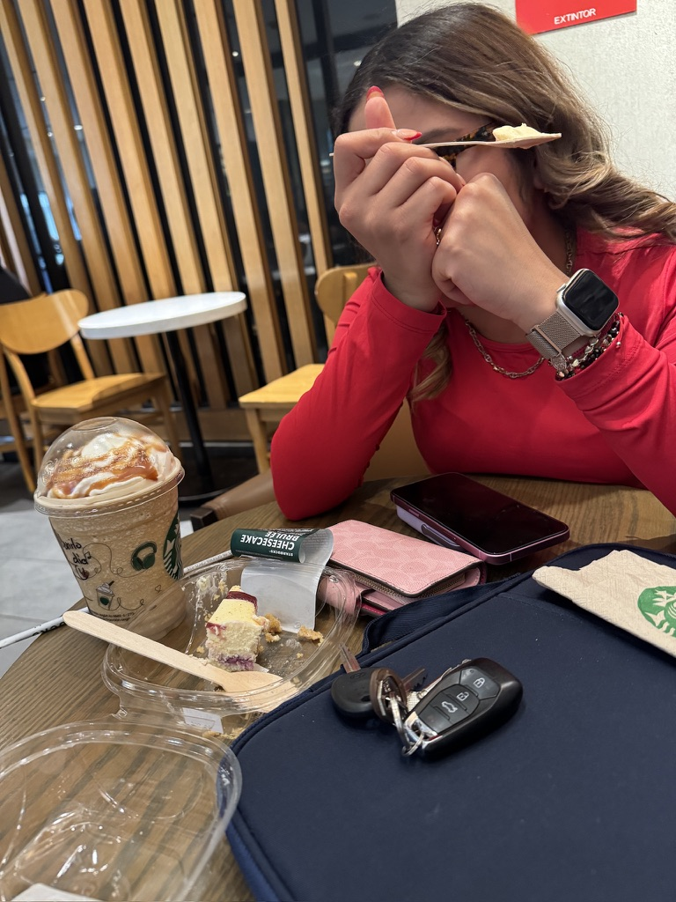
Primera vez que iba al Auditorio Nacional y cumplí una meta más estando contigo en CDMX. Fue aún más especial porque fuimos con tus papás y la pasamos muy bien.
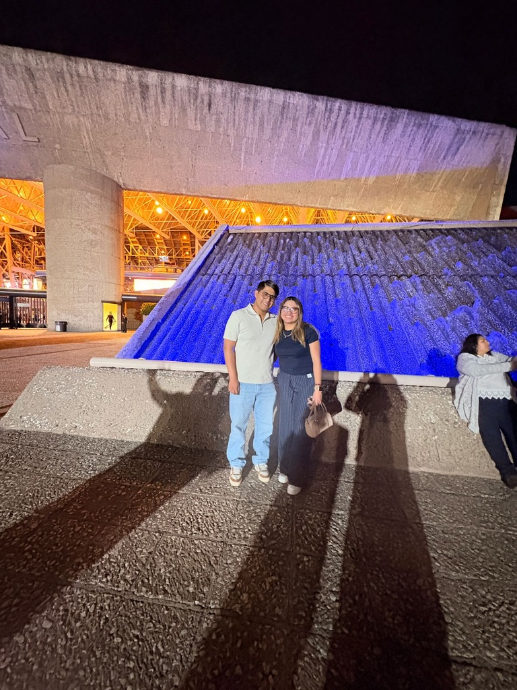
Aventuras por toda la CDMX buscando cierto lugarcito. Ese día te entregué tus primeras flores oficialmente como novio. Despedirme de ti siempre es lo que menos me gusta :(
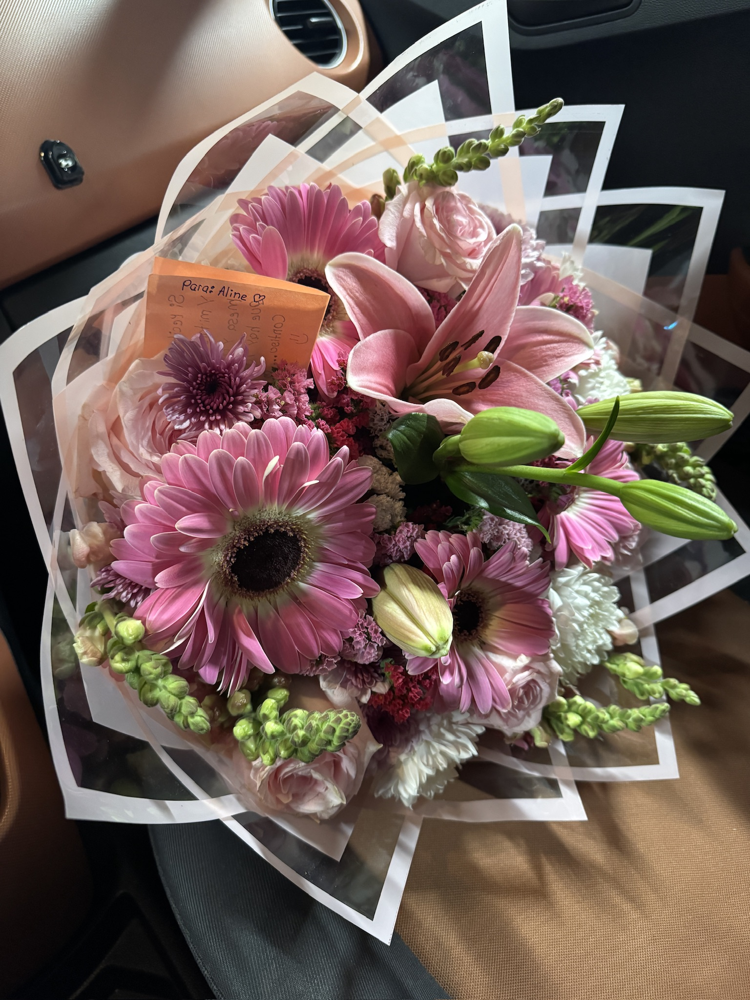
Tenía que ir a Pachuca por trabajo. Tuviste un mal día, así que en lugar de regresar a Puebla, tomé el camión a CDMX solo para darte ánimos, unos chocolatitos y unas florecitas. Fueron solo 30 minutos, pero haría lo que fuera por verte sonreír.
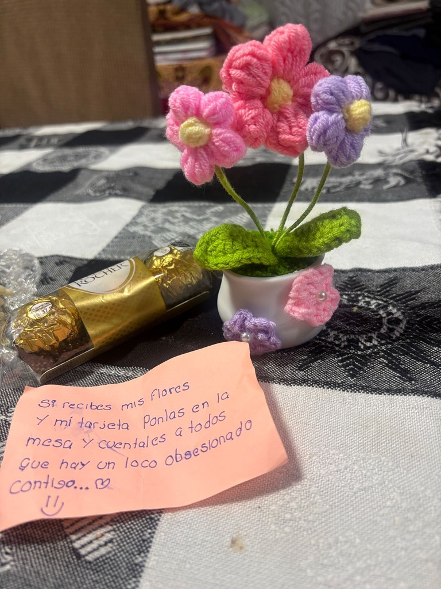
Regresé a CDMX después del trabajo y te llevé cemitas. Sé que ese día no me porté como debía y me lamenté por mi comportamiento, pero te agradezco por escuchar mis disculpas y seguir avanzando juntos.
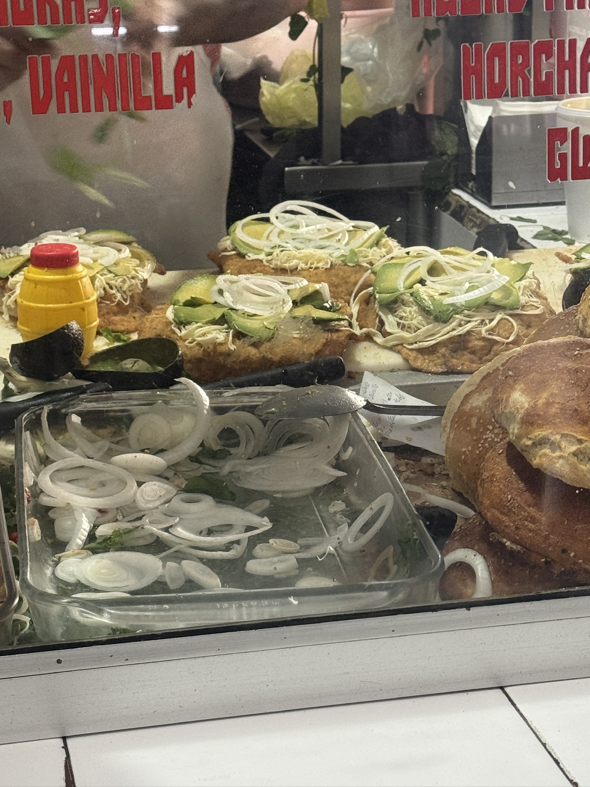
Estuvimos en tu casa y luego fuimos al Estadio con Verde, Jac y Lalo. Valoro inmensamente que, aunque pudiste aprovechar el día para trabajar y no querías ir, decidiste acompañarnos porque sabías que yo quería conocerlo.
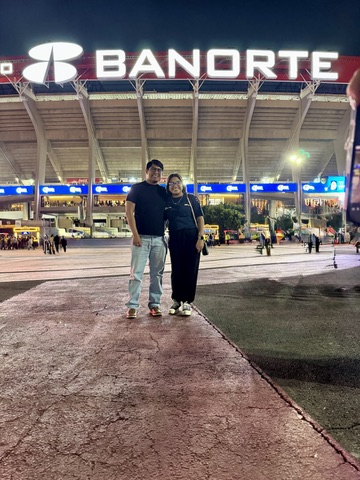
Pasamos la tarde en tu casa antes de tener que decirnos adiós nuevamente. Los días separados los pasamos chateando, extrañándote a cada instante.
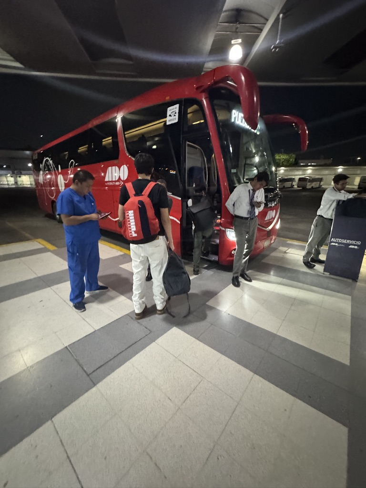
Regresé a CDMX para una entrevista y pude pasar a verte para comer algo rico y ver ropa, justo un día antes de que te fueras de viaje con tu familia.
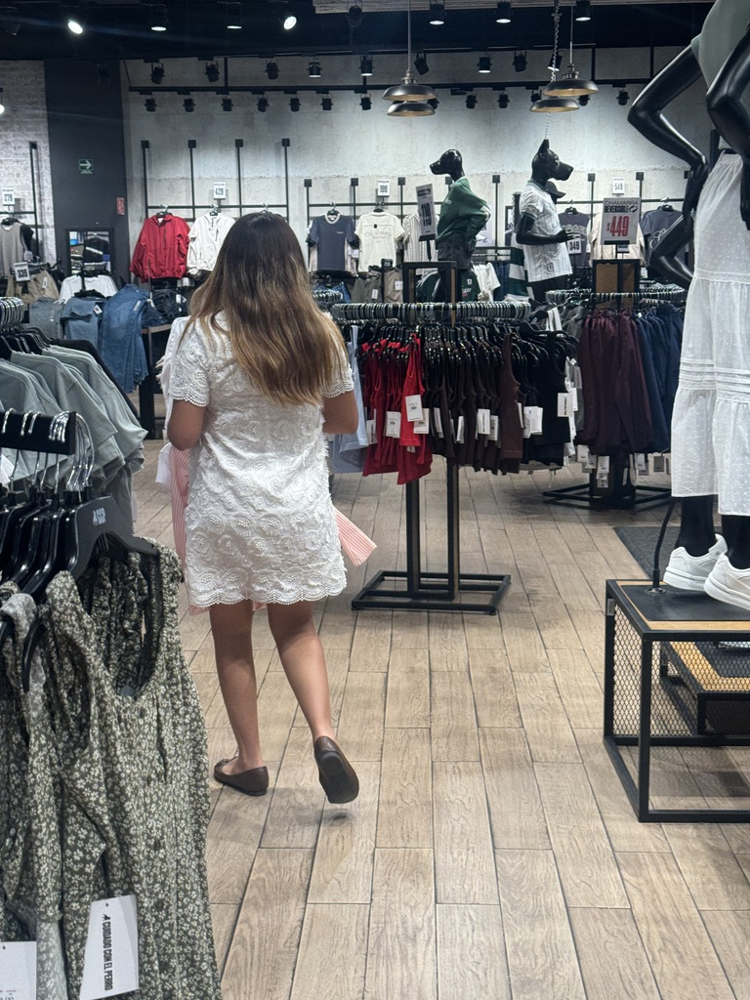
Aquel día seguia en CDMX sin embargo tuve que ir a Puebla desde temprano para luego ir a Pachuca por trabajo, regresé a CDMX solo para poder pasar nuestro ratito de novios antes de tu viaje. Valió completamente la pena.
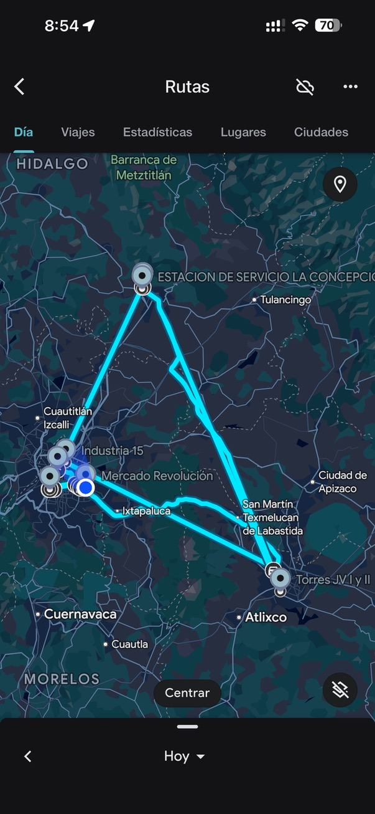
Hoy cumplimos un mes. Lo pasamos a distancia porque sigues de viaje, pero yo sigo en CDMX para poder estar contigo mañana en cuanto regreses. No hay momento que no te extrañe ni recuerde lo mucho que te quiero, muchas gracias por este primer mes de tilines, TE AMO ♡.
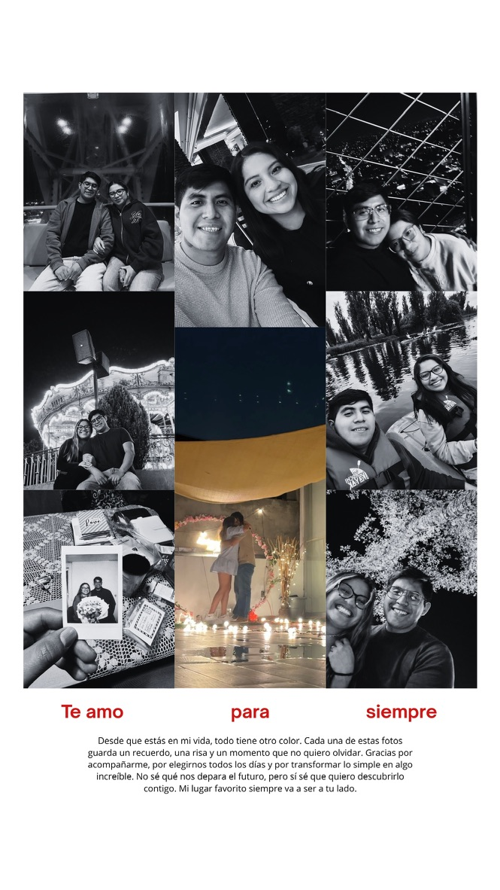